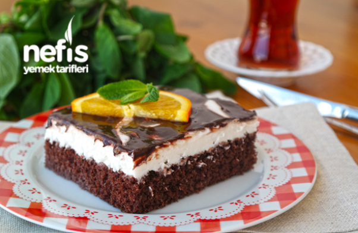

İsminin aksine yedikçe insanı mutlu eden ağlayan pastanın, krem şantisi ile çikolata sosunun inanılmaz tadı sizi mest edecek. Yapımı da oldukça pratik olan,davet masalarınızın en çok konuşulanı olmaya aday ağlayan pasta tarifimi sizde mutlaka denemelisiniz
Ağlayan Pasta Tarifi Nasıl Yapılır? Yumurta ve şekeri iyice çırpın. Sütü, kakaoyu, vanilini, kabartma tozunu ve elenmiş unu ekleyip tekrar çırpın. Dikdörtgen borcamda yaklaşık 30 dk. 160 derecede keki pişirin. Kek pişince 1,5 su bardağı sütü kekin üstüne dökün. Krem şantiyi sütle çırpın. Çikolata sosunu da paketteki tarife göre hazırlayın. Krem şantiyi soğuyan kekin üzerine yayın ve daha sonra soğuyan çikolata sosunu da krem şantinin üstüne yayın. Pastayı en az 2 saat buzdolabında bekletelim. Afiyet olsun…
